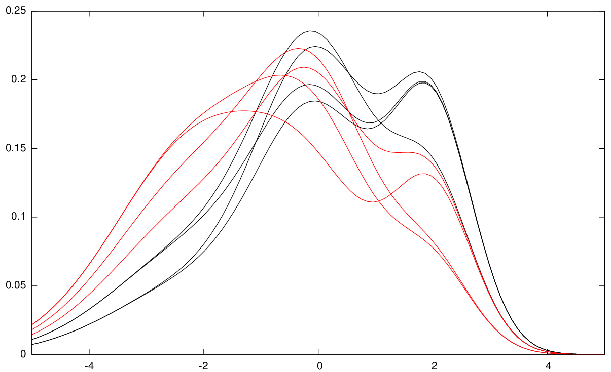
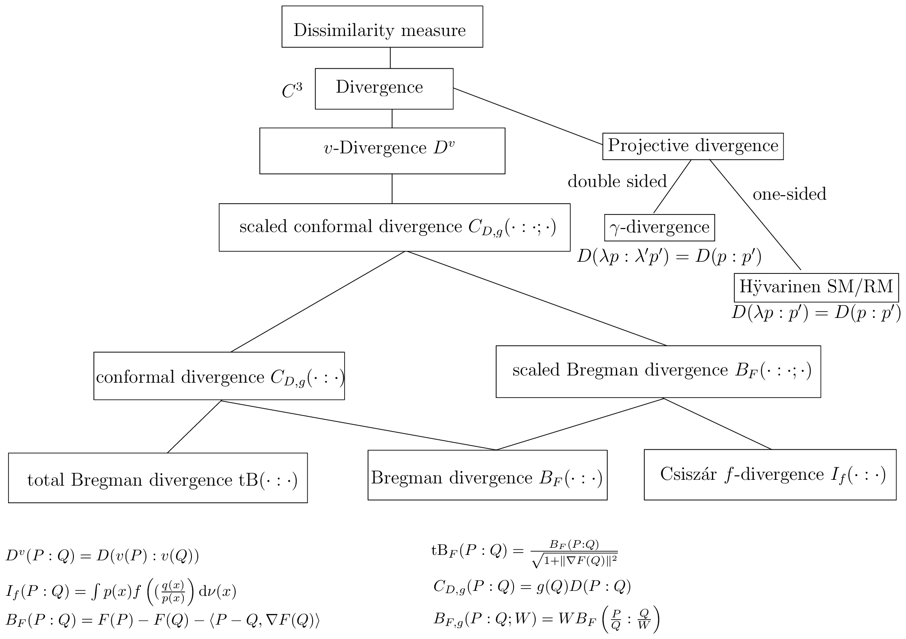

05 conclusion

图15：w-GMM聚类为k=2个簇的示例。
关于混合族（结构\((\mathcal{M}, \mathrm{KL})\)）。在统计背景下还可以遇到许多其他对偶平坦结构：例如，Amari的教科书[8]中报告了\(D\)维概率单形\(\Delta_D\)的另外两种对偶平坦结构：(1) \(\alpha\)-几何的共形变形（第88页，[8]的公式4.95），以及(2) \(\chi\)-伴随之几何（第91页，[8]的公式4.114）。
5 结论：总结、历史背景与展望¶
5.1 总结¶
我们阐述了信息几何中信息流形\((M, g, \nabla, \nabla^*)\)的对偶特性。对偶结构由一对共轭联络与提供保持度量的对偶平行移动的度量张量共同定义。我们展示了如何将这一结构扩展为一个单参数结构族：从一对共轭联络出发，构建该单参数结构族的流程可以非正式地概括如下：
我们陈述了信息几何中关于对偶常曲率流形的基本定理，包括对偶平坦流形这一特殊但重要的情形，其上存在两个势函数以及由Legendre-Fenchel变换关联的全局仿射坐标系。尽管信息几何历史上始于通过令度量张量为Fisher信息矩阵对参数化概率分布族\(\mathcal{P}\)进行Riemannian建模\((\mathcal{P}, {}_{\mathcal{P}}g)\)，我们强调了信息几何的对偶观点，即考虑可以从任意散度导出的非Riemannian流形，且不一定局限于统计背景（例如，信息流形可用于数学规划[101]）。让我们注意到，对于任何对称散度（例如任何对称化的\(f\)-散度，如平方Hellinger散度），其诱导的共轭联络与Levi-Civita联络重合，但Fisher-Rao度量距离与平方Hellinger散度并不重合。
一方面，Riemannian度量距离\(D_\rho\)绝不是一个散度，因为根式距离函数在极端点处不光滑，但平方Riemannian度量距离总是一个散度。另一方面，取散度\(D\)的\(\delta\)次幂（即\(D^\delta\)），其中\(\delta > 0\)，可能产生一个度量距离（例如，Jensen-Shannon散度[44]的平方根），但这并不总是成立：取幂的Jeffreys散度\(J^\delta\)永远不是度量距离（见[127]，第889页）。最近，Optimal Transport
40
(OT) 理论 [130] 在统计学和机器学习中引起了广泛关注。但同一椭圆轮廓族的两个成员之间的最优传输具有相同的最优传输公式距离（参见 [40] 的式 16 和式 17，尽管它们具有不同的 Kullback-Leibler 散度）。另一个本质区别在于，位置-尺度族的 Fisher-Rao 流形是双曲的，而位置-尺度族的 Wasserstein 流形具有正曲率 [40, 125]。
注意，我们可以按如下方式在相似度 \(S(p,q) \in (0,1]\) 与相异度 \(D(p,q) \in [0,\infty)\) 之间相互转换：
当相异度满足（可加）三角不等式（即对于任意三元组 \((p,q,r)\)，有 \(D(p,q)+D(q,r) \geq D(p,r)\)）时，则对应的相似度满足可乘三角不等式：\(S(p,q) \times S(q,r) \leq S(p,r)\)。度量距离 \(D\) 上的度量变换是指一个变换 \(T\)，使得 \(T(D(p,q))\) 是一个度量。变换 \(T(u) = \frac{1}{1+u}\) 是一种度量变换，它将可能无界的度量距离加以有界化：也就是说，如果 \(D\) 是一个无界度量，那么 \(T(D(p,q)) = \frac{D(p,q)}{1+D(p,q)}\) 是一个有界度量距离。变换 \(S(u) = u^2\) 不是度量变换，因为欧几里得度量距离的平方不是一个度量距离。
5.2 信息几何简史¶
信息几何（Information Geometry, IG）这一领域的历史动机在于为统计模型提供某些微分几何结构，以便对统计问题进行几何化的推理，其致力于实现数理统计的几何化 [29, 5, 39, 67, 54, 58, 9, 47]：Harold Hotelling 教授 [53] 在 20 世纪 20 年代末首次将 Fisher 信息矩阵（FIM）\(I\) 视为黎曼度量张量 \(g\)（即 Fisher 信息度量，FIm），并将参数化概率分布族 \(M\) 解释为黎曼流形 \((M,g)\)。从历史角度看，Hotelling 出席了 1929 年 12 月 26 日至 29 日在美国宾夕法尼亚州 Bethlehem 举行的 American Mathematical Society 年会，但在 12 月 27 日预定的报告之前离开了。他关于 “Spaces of Statistical Parameters” 的手写笔记由一位同事宣读，并在 [123] 中完整排版。我们衷心感谢 Stigler 教授寄来手写笔记的扫描件，并通过电子邮件讨论了信息几何诞生的一些历史方面。在这项开创性工作中，Hotelling 提到位置-尺度概率族给出了常非正曲率的黎曼流形。这种对参数化密度族的黎曼建模后来由 Calyampudi Radhakrishna Rao（C.R. Rao）在其著名论文 [111]（1945 年）中独立地进一步研究，该论文还包括了 Cramér-Rao 下界 [71] 以及统计学中使用的 Rao-Blackwellization 技术。如今，诱导的黎曼度量距离常被称为 Fisher-Rao 距离 [122] 或 Rao 距离 [113]。Harold Jeffreys [55] 开创了黎曼几何在统计学中的另一项应用，他提议将 Fisher-黎曼流形的归一化体积元用作不变先验。在那些开创性论文中，将 Fisher 信息矩阵用作度量张量缺乏理论上的正当性（除了它是正则可识别模型的良定正定矩阵这一事实之外）。如今，这一黎曼度量张量简称为 信息度量。现代信息几何考虑使用非黎曼对偶建模 \((M,g,\nabla,\nabla^*)\) 来推广这一方法，当 \(\nabla=\nabla^*={}^{\text{LC}}\nabla\)（Levi-Civita 联络，即与度量张量相容的唯一无挠仿射联络）时，该模型与黎曼流形重合。Fisher-Rao 几何也已在热力学中得到探索，产生了 Ruppeiner 几何 [134]，而热力学的几何如今被称为 几何热力学 [109]。
20 世纪 60 年代，Nikolai Chentsov（也常写作 Cencov）研究了所有统计决策规则的代数范畴及其诱导的几何结构：即 \(\alpha\)-几何（“等价微分几何”）以及对偶平坦流形（关于 Kullback-Leibler 散度的指数族的 “非对称毕达哥拉斯几何”）。在其 1972 年俄文专著 [29] 的英文版序言中，该研究领域被定义为 “几何统计学”。然而，在俄文原著中，Chentsov 使用了俄文术语 geometrostatistics。According to Professor
Alexander Holevo，几何统计学这一术语由 Andrey Kolmogorov 提出，用以定义统计模型的微分几何领域。在 Chentsov [29] 的专著中，Fisher 信息度量被证明是（在缩放因子意义下）唯一的度量张量，它在 Markov 态射下具有统计不变性（关于推广到正测度的更简单证明，参见 [26]）。
信息几何的对偶本质由 Shun-ichi Amari 教授 [4] 进行了透彻研究。在他1985年专著 [5] 的序言中，Amari 教授创造了信息几何这一术语，具体如下：“统计学中发展的微分几何方法也适用于信息论、系统论等其他科学领域……它们将共同开辟一个新的领域，我想将其称为信息几何。”Amari 教授在 [5] 中提到，他于1959年将高斯 Riemann 流形视为双曲流形，并受到 Efron 关于统计曲率的论文 [41]（1975年）的强烈影响，从而在1980年代研究了 \(\alpha\)-联络族 [4, 68]。Amari 教授在 Kondo [31] 教授的指导下完成了博士学位，Kondo 是一位与 Kawaguchi [59] 教授有交流的微分几何专家。微分几何在统计学中的作用已在 [17] 中讨论。
值得注意的是，信息几何中的对偶仿射联络也在仿射微分几何 [99] 中被独立研究，后者通过定义体积形式而非 Riemann 几何的度量形式，来考虑在保体积仿射变换下的不变性。与度量相容的对偶平行移动概念归功于 Aleksandr Norden [100] 和 Rabindra Nath Sen [116, 117, 118]（参见 http://insaindia.res.in/detail/N54-0728 中的 Senian 几何）。
我们在下面总结信息流形的主要基本结构：
| \((M,g)\) | Riemann 流形 | | \((\mathcal{P},{}^\mathcal{P}g)\) | Fisher-Riemann（期望）Riemann 流形 | | \((M,g,\nabla)\) | 带有仿射联络 \(\nabla\) 的 Riemann 流形 \((M,g)\) | | \((\mathcal{P},{}^\mathcal{P}g,{}^\mathcal{P}{}^e\nabla^\alpha)\) | 带有仿射指数 \(\alpha\)-联络的 Chentsov 流形 | | \((M,g,\nabla,\nabla^*)\) | Amari 的对偶信息流形 | | \((\mathcal{P},{}^\mathcal{P}g,{}^\mathcal{P}\nabla^{-\alpha},{}^\mathcal{P}\nabla^\alpha)\) | Amari 的（期望）信息 \(\alpha\)-流形，\(\alpha\)-几何 | | \((M,g,C)\) | Lauritzen 的统计流形 [62] | | \((M,{}^D g,{}^D\nabla,{}^{D^*}\nabla)\) | 由散度 \(D\) 诱导的 Eguchi 共轭联络流形 | | \((M,{}^F g,{}^F C)\) | 由凸势 \(F\) 诱导的 Chentsov/Amari 对偶平坦流形 |
我们使用 \(\equiv\) 符号表示几何结构的等价性。例如，我们有 \((M,g)\equiv(M,g,{}^{\text{LC}}\nabla,{}^{\text{LC}}\nabla^*={}^{\text{LC}}\nabla)\)。
5.3 展望¶
我们推荐两本近期出版的教科书 [25, 8]，以深入了解（参数化）信息几何，并推荐著作 [48]，以详细描述某些无限维统计模型。（日本读者可参阅 [7, 45]。）我们未报告常见参数模型（如多元高斯分布、Gamma/Beta 分布等）的期望 \(\alpha\)-几何的度量张量各系数、Christoffel 符号和偏度张量。这些内容可在 [10, 25] 以及涉及较不常见分布族的多篇文章 [64, 65, 141, 105, 142, 104, 10] 中找到。尽管我们聚焦于有限参数设定，信息几何也在研究非参数分布族 [107] 以及量子信息几何 [51]。
我们已证明，总能从任意散度函数 \(D\) 构造一个信息流形 \((M,D)\)。因此，在应用中考虑散度的一般类别是很重要的，这些类别最好在理想情况下被公理化，并被证明具有穷尽特征。除了三大类 Bregman/Csiszár/Jensen 散度（这些类别之间存在重叠 [102]）之外，我们还可以提及共形散度类 [98, 91]、投影散度类 [92, 97] 等。图 16 说明了各主要距离类别之间的关系。
信息几何有着诸多展望，新的 Springer 期刊\(^{13}\)以及两年一次的国际会议“Geometric Sciences of Information”（GSI）[80, 81, 82] 及其集体
\(^{13}\)'Information Geometry', https://www.springer.com/mathematics/geometry/journal/41884
42
- 不相似性度量
- 散度 (\(C^3\))
- \(v\)-散度 \(D^v\)
- 缩放共形散度 \(C_{D,g}(\cdot : \cdot; \cdot)\)
- 共形散度 \(C_{D,g}(\cdot : \cdot)\)
- 总Bregman散度 \(\mathrm{tB}(\cdot : \cdot)\)
- Bregman散度 \(B_F(\cdot : \cdot)\)
- 缩放Bregman散度 \(B_F(\cdot : \cdot; \cdot)\)
- Bregman散度 \(B_F(\cdot : \cdot)\)
- Csiszár \(f\)-散度 \(I_f(\cdot : \cdot)\)
- 投影散度
- 双侧：\(\gamma\)-散度，\(D(\lambda p : \lambda' p') = D(p : p')\)
- 单侧：Hyvärinen SM/RM，\(D(\lambda p : p') = D(p : p')\)

图 16：距离/散度的原则性分类
43